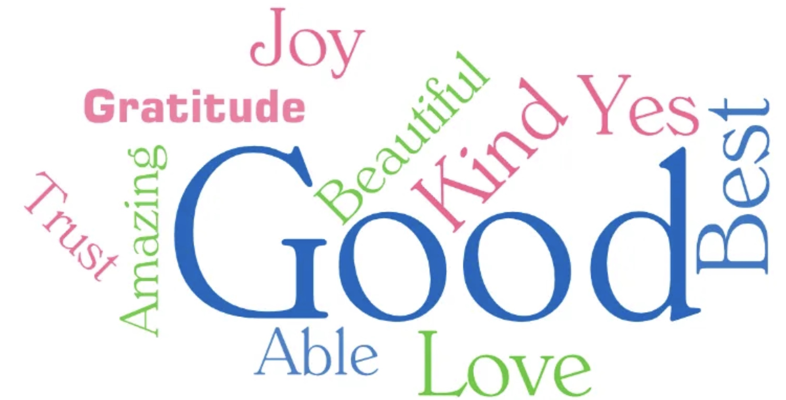
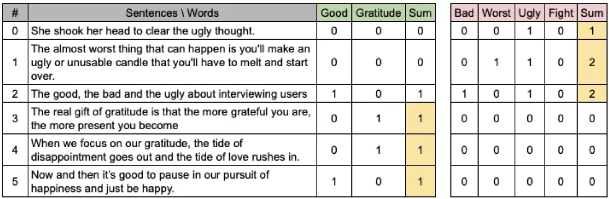
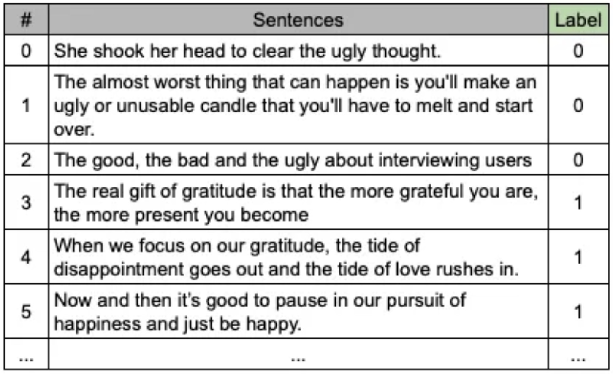

from nltk.tokenize import word_tokenize
sentence = "The good, the bad and the ugly about interviewing users"
print(sorted(set(word_tokenize(sentence))))[',', 'The', 'about', 'and', 'bad', 'good', 'interviewing', 'the', 'ugly', 'users']Fabricio Braz
February 22, 2021
Last Friday I was in a clubhouse conversation aiming to explore groundbreaking “Attention is all that you need” paper when someone asked: why can’t I just use the text like it is to feed the neural net to modeling?
Speakers start to turn around and the question IMHO wasn’t answered. If you do not figure that, maybe multi-head attention either. That’s my motivation to tackle this subject.
Let start with a very common task in NLP: sentiment classification. Moreover, why not begin with a rule-based approach for this challenge?
First, we can define negative and positive word lists (find lot more here).

Now with input text, you have to count occurrences of the words in the list, sum up the number for negative and positive separately, taking big result as the winner sentiment. Here are some examples.

Have you realized that we just moved from char/word symbolic space to number space? The sum word occurrences for each sentiment is the only source considered to decide between positive or negative.
The starting point of any NLP experiment is the definition of the language vocabulary, which means the only terms your solution will be aware of. The positive and negative lists merged into the vocabulary considered by the rule-based approach shown.
Using the machine learning approach, things change heavily since the rule we did to determine the sentence sentiment is now learned by the model in the training phase. At that time the model goal is to define a math function that generalizes the skill for defining the sentiment according to the words in a sentence (bag of words - BoW).

As well as we did previously, the flow requires the language vocabulary used. The model will test equations (i.e.: w.x + b, linear model) varing their coeficients (w and b) in order to address the expected link between the sentence and its label. Mostly models, neural nets included, cannot deal with alpha symbols. That’s why we need to express the sentence content in terms of numbers (i.e. BoW, TFIDF, etc).
The sentence The good, the bad and the ugly about interviewing users gives the following words to vocabulary:
from nltk.tokenize import word_tokenize
sentence = "The good, the bad and the ugly about interviewing users"
print(sorted(set(word_tokenize(sentence))))[',', 'The', 'about', 'and', 'bad', 'good', 'interviewing', 'the', 'ugly', 'users']As you may note, the term the is repeated. Picture how many possibilities would have for it:
def case_combinations(word):
if len(word) == 0:
return []
elif len(word) == 1:
return [word.lower(), word.upper()]
else:
rest = case_combinations(word[1:])
return [word[0].lower() + x for x in rest] + [word[0].upper() + x for x in rest]
case_combinations('the')['the', 'thE', 'tHe', 'tHE', 'The', 'ThE', 'THe', 'THE']What about “interviewing”? 4096 ways to write 😱. Would not have enough computational power to deal with the 5% of 600,000 English words like that. That’s the reason for the normalization of terms before machine learning modeling.
Considering only the six samples presented bellow, we would have the following vocabulary:
sentences = ["She shook her head to clear the ugly thought.",
"The almost worst thing that can happen is you'll make an ugly or unusable candle that you'll have to melt and start over.",
"The good, the bad and the ugly about interviewing users",
"The real gift of gratitude is that the more grateful you are, the more present you become",
"When we focus on our gratitude, the tide of disappointment goes out and the tide of love rushes in.",
"Now and then it’s good to pause in our pursuit of happiness and just be happy."]
vocabulary = sorted(set(word_tokenize(' '.join(sentences).lower())))
print(vocabulary)["'ll", ',', '.', 'about', 'almost', 'an', 'and', 'are', 'bad', 'be', 'become', 'can', 'candle', 'clear', 'disappointment', 'focus', 'gift', 'goes', 'good', 'grateful', 'gratitude', 'happen', 'happiness', 'happy', 'have', 'head', 'her', 'in', 'interviewing', 'is', 'it', 'just', 'love', 'make', 'melt', 'more', 'now', 'of', 'on', 'or', 'our', 'out', 'over', 'pause', 'present', 'pursuit', 'real', 'rushes', 's', 'she', 'shook', 'start', 'that', 'the', 'then', 'thing', 'thought', 'tide', 'to', 'ugly', 'unusable', 'users', 'we', 'when', 'worst', 'you', '’']With the vocabulary in hand, we finally can get the proper input data for modeling, pictured by a Pandas Dataframe below, where I’ve highlighted some values greater than zero, which means the sample has the word. For example, sample 3 “Now and then it’s good to pause in our pursuit of happiness and just be happy.” has 2 occurrences of term and beyond other terms.
import pandas as pd
import numpy as np
samples = [[sentence.split().count(word) for word in vocabulary] for sentence in sentences]
df = pd.DataFrame(np.array(samples),columns=vocabulary)
df| 'll | , | . | about | almost | an | and | are | bad | be | ... | tide | to | ugly | unusable | users | we | when | worst | you | ’ | |
|---|---|---|---|---|---|---|---|---|---|---|---|---|---|---|---|---|---|---|---|---|---|
| 0 | 0 | 0 | 0 | 0 | 0 | 0 | 0 | 0 | 0 | 0 | ... | 0 | 1 | 1 | 0 | 0 | 0 | 0 | 0 | 0 | 0 |
| 1 | 0 | 0 | 0 | 0 | 1 | 1 | 1 | 0 | 0 | 0 | ... | 0 | 1 | 1 | 1 | 0 | 0 | 0 | 1 | 0 | 0 |
| 2 | 0 | 0 | 0 | 1 | 0 | 0 | 1 | 0 | 1 | 0 | ... | 0 | 0 | 1 | 0 | 1 | 0 | 0 | 0 | 0 | 0 |
| 3 | 0 | 0 | 0 | 0 | 0 | 0 | 0 | 0 | 0 | 0 | ... | 0 | 0 | 0 | 0 | 0 | 0 | 0 | 0 | 2 | 0 |
| 4 | 0 | 0 | 0 | 0 | 0 | 0 | 1 | 0 | 0 | 0 | ... | 2 | 0 | 0 | 0 | 0 | 1 | 0 | 0 | 0 | 0 |
| 5 | 0 | 0 | 0 | 0 | 0 | 0 | 2 | 0 | 0 | 1 | ... | 0 | 1 | 0 | 0 | 0 | 0 | 0 | 0 | 0 | 0 |
6 rows × 67 columns
There are many approaches for describing text numerically. Depending on the model some of them are inappropriate. It’s what happened between transformers models and BoW. You may find a lot more ways also to pre-process text data. Let me know how have you been preparing your text data.
Thanks for reading!
Best!
FB